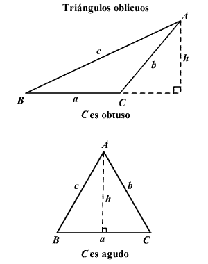

Resolver Triángulo Oblicuángulo Por Ley de Senos
La ley de los senos es la relación entre los lados y ángulos de triángulos no rectángulos (oblicuos). Simplemente, establece que la relación de la longitud de un lado de un triángulo al seno del ángulo opuesto a ese lado es igual para todos los lados y ángulos en un triángulo dado.
En ∆ABC es un triángulo oblicuo con lados a, b y c , entonces.

Para usar la ley de los senos necesita conocer ya sea dos ángulos y un lado del triángulo (AAL o ALA) o dos lados y un ángulo opuesto de uno de ellos (LLA).
Dese cuenta que para el primero de los dos casos usamos las mismas partes que utilizó para probar la congruencia de triángulos en geometría pero en el segundo caso no podríamos
probar los triángulos congruentes dadas esas partes. Esto es porque las partes faltantes podrían ser de diferentes tamaños. Esto es llamado el caso ambiguo y lo discutiremos más adelante.
Resolver Usando Ley de Senos
Resolver Triángulo Oblicuángulo Por Ley de Cosenos
La ley de los cosenos es usada para encontrar las partes faltantes de un triángulo oblicuo (no rectángulo) cuando ya sea las medidas de dos lados y la medida del ángulo
ncluído son conocidas (LAL) o las longitudes de los tres lados (LLL) son conocidas. En cualquiera de estos casos, es imposible usar la ley de los senos porque no podemos
establecer una proporción que pueda resolverse.
La ley de los cosenos establece:
c 2 = a 2 + b 2 – 2 ab cos C .
Esto se parece al teorema de Pitágoras excepto que para el tercer término y si C es un ángulo recto el tercer término es igual 0 porque el coseno de 90° es 0 y
se obtiene el teorema de Pitágoras. Así, el teorema de Pitágoras es un caso especial de la ley de los cosenos.
La ley de los cosenos también puede establecerse como
b 2 = a 2 + c 2 – 2 ac cos B or
a 2 = b 2 + c 2 – 2 bc cos A .
Resolver Usando Ley de Cosenos
Redes Sociales
Sourcern en Github